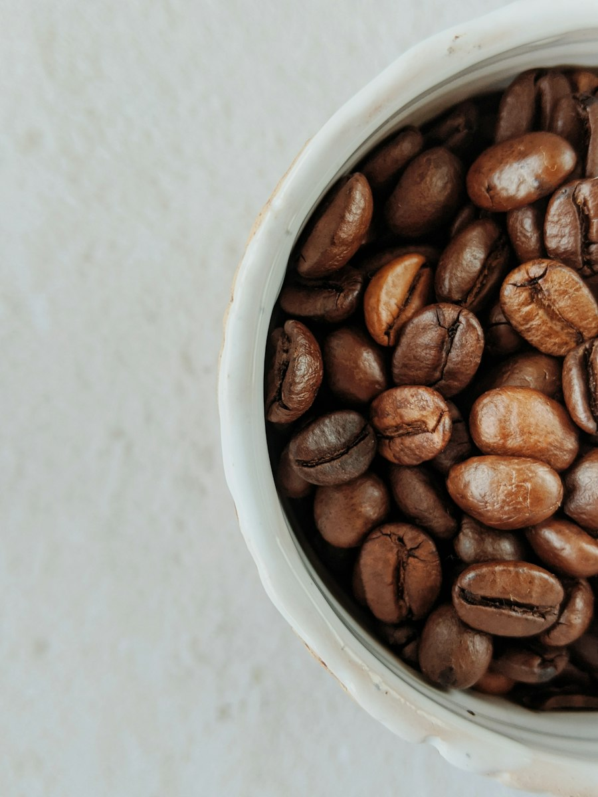
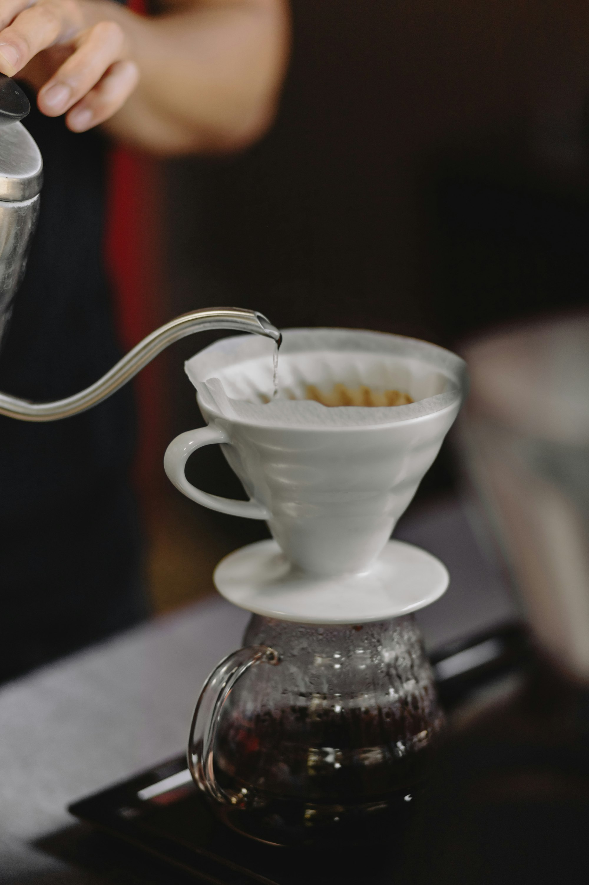
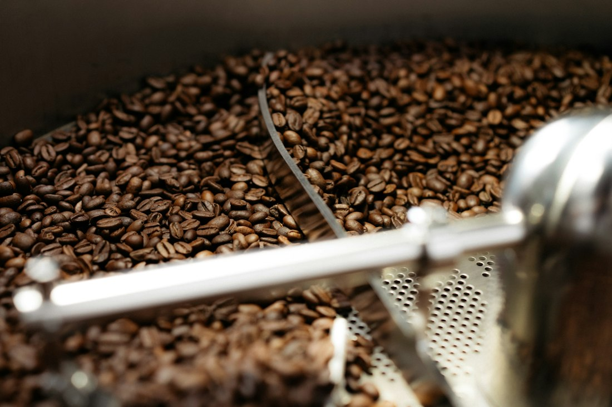
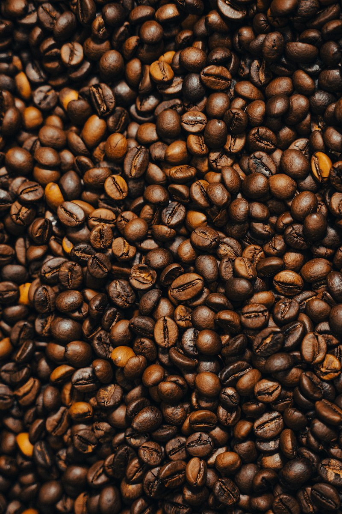
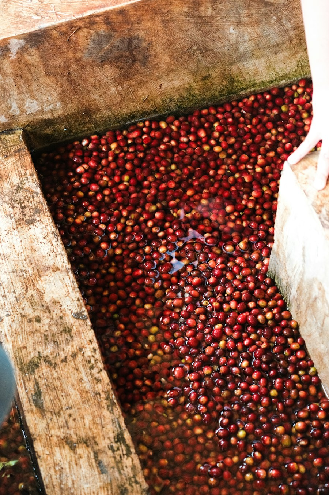
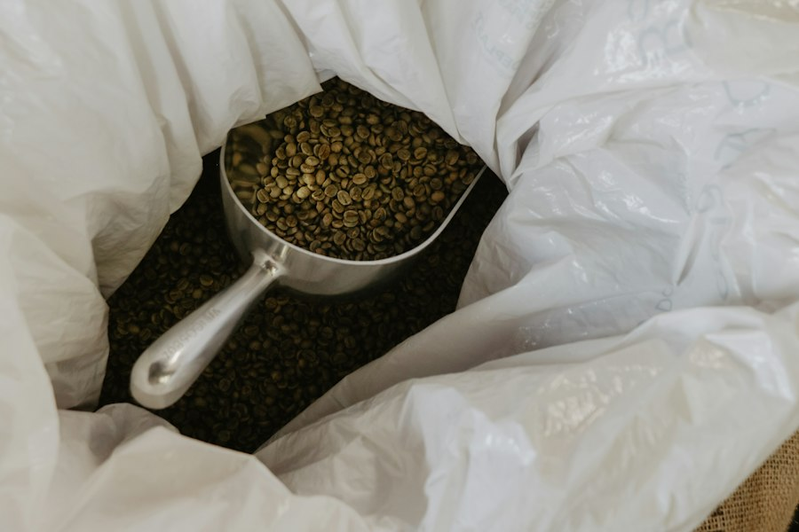
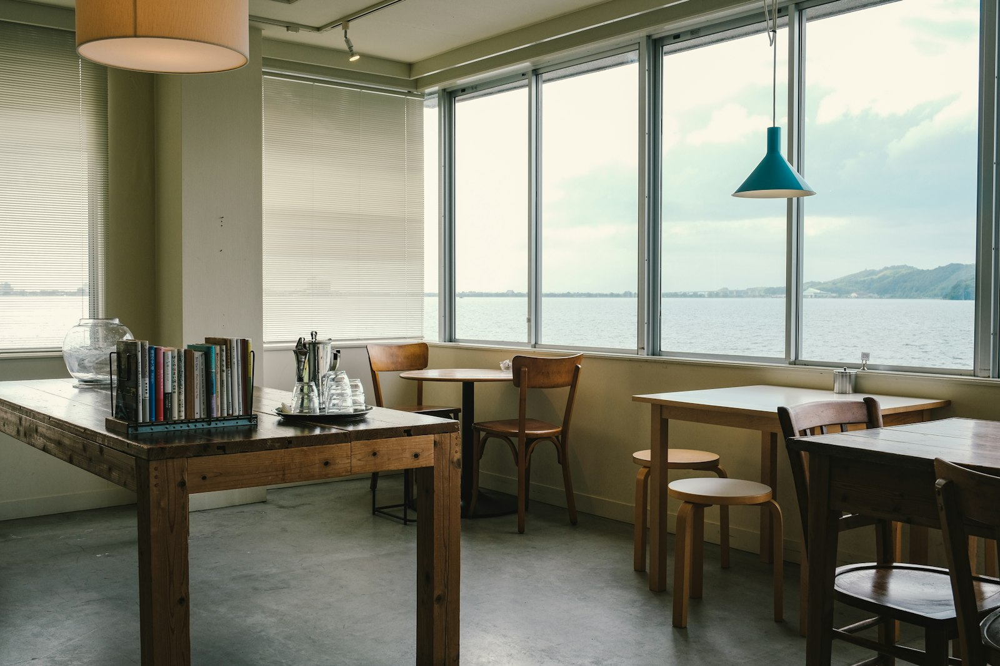

浅煎り No.01Ethiopia · Guji
エチオピア グジHana Washed
- ジャスミン
- 柚子
- はちみつ
¥2,400税込 / 200g

清澄白河の焙煎所 Small-batch roastery, Tokyo
清澄白河の倉庫を
本日の焙煎エチオピア グジ「ハナ」


01Our Craft
Kumoのはじまりは2016年。古い米倉庫の片隅に、中古のドラム式焙煎機を一台置いたところから始まりました。少しずつ、時間をかけてじっくりと。ハゼの音に耳を澄ませる焙煎は、いまも変わりません。
毎年訪れる数軒の農園から直接買い付け、その週に新鮮なまま届けられる分だけを焼いています。産地の個性が感じられる浅さで、けれどお茶のように軽すぎない。それが私たちの目指す「雲」の味わいです。
森 遥Haruka Mori代表・ヘッドロースター
02This Season
すべて200g入り。毎週火曜・金曜にご注文分だけを焙煎し、アロマバルブ付きの袋に詰めてお届けします。

浅煎り No.01Ethiopia · Guji
¥2,400税込 / 200g

中煎り No.02Colombia · Huila
¥2,200税込 / 200g

浅煎り No.03Kenya · Nyeri
¥2,800税込 / 200g
House Blend
¥1,980税込 / 200g
03Subscription
ご注文ごとに焙煎し、全国へお届けします。お休み・スキップ・豆の変更はいつでも自由。縛りや解約金はありません。
華やかでフルーティー、まろやかで甘い、深くチョコレートのよう。迷ったら焙煎士の「おまかせ」もどうぞ。
火曜か金曜に焙煎し、48時間なじませてから、土に還るパッケージに詰めて発送します。
全国送料無料。毎回おすすめの淹れ方カードを同封します。配送の管理はマイページからいつでも。

04Visit Us
焙煎所の一角は、小さなコーヒースタンドになっています。ガラス越しに焙煎の様子を眺めながら、ハンドドリップを一杯。焼きたての豆も、その場でお持ち帰りいただけます。
火曜定休・8:00 – 18:00
05Voices